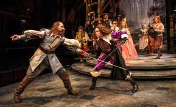

TİYATRO TERİMLERİ SÖZLÜĞÜ
Tiyatro Nedir
Güzel sanatların en eski dallarından biridir. Yaşanmış ya da yaşanması mümkün olayların sahnede canlandırılarak oynanmasıdır.
Türkçeye İtalyanca “teatro” kelimesi ile giren “tiyatro” terimi, günümüzde “oyunun oynandığı yer”, “oyunu sahneleyen grup”, “sahnelenmek için yazılmış oyunların tümü” anlamlarında kullanılmaktadır.

MODERN TİYATRO – TİYATRONUN DOĞUŞU
- Batılı anlamda tiyatronun ilk örnekleri Yunan edebiyatında görülür.
- Bugünkü anlamıyla tiyatro, eski Yunan toplumunda bereket tanrısı Dionysos’u (Diyanizos) kutsamak için yapılan bağ bozumu törenlerinden doğmuş, daha sonra bağımsızlaşarak bir sanat hâline gelmiştir.
- Tiyatronun kurallarını ilk olarak Aristoteles, Poetika’sında belirtmiştir.
- Tiyatronun ilk örnekleri trajedi ve komedi şeklindedir, daha sonra dram ortaya çıkmıştır.
- Dram türündeki tiyatroları ilk defa romantikler yazmıştır, tiyatronun ilk örnekleri manzumdur (şiir biçiminde).
- Aisklyos (Ayklos) ve Sophokles (Sofokles) modern tiyatroyu ortaya çıkaracak değişiklikler yapmıştır.
- Batı uygarlıklarında göstermeye bağlı edebî metinlere, toplu hâlde “tiyatro”, “drama”, “dramatik edebiyat” adları verilmiştir.
- Tiyatro metinlerinde, anlatmaya bağlı metinlerdeki anlatıcının yerini, olayı doğrudan yaşayarak gösteren oyuncular alır.
- Anlatmaya bağlı metinlerdeki “olay örgüsü”, göstermeye bağlı metinlerde “dramatik örgü” olarak adlandırılır.
- Tiyatro öğeleri şunlardır: Tiyatro eseri (oyun), olay veya durum, zaman, mekân (yer), kişiler, üslup, oyuncu, sahne ve seyirci.
- Tiyatro oyununun bir metne bağlı olarak sahnelenmesi edebiyatla tiyatronun ortak yönünü oluşturur; çünkü tiyatro metni edebiyat sanatının özelliklerini yansıtır.